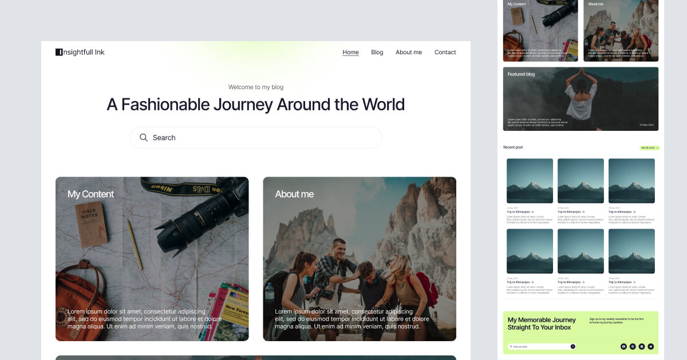

BCMS Astro starter source
BCMS Astro Blog
This corpus route stores the upstream BCMS starter source at astro/blog. The starter needs BCMS content/type generation to build as a complete app, so this hosted page presents the stored source provenance, local starter preview asset, and interaction fixtures.

Interaction fixtures
Trackable actions for BCMS Astro Blog
Extra buttons, links, forms, tabs, choices, and disclosures so canonical mappings can be attached consistently across sparse source pages.
Where is the source?
astro/blog
What is the license?
upstream-repository-license copied from the vendored upstream folder.